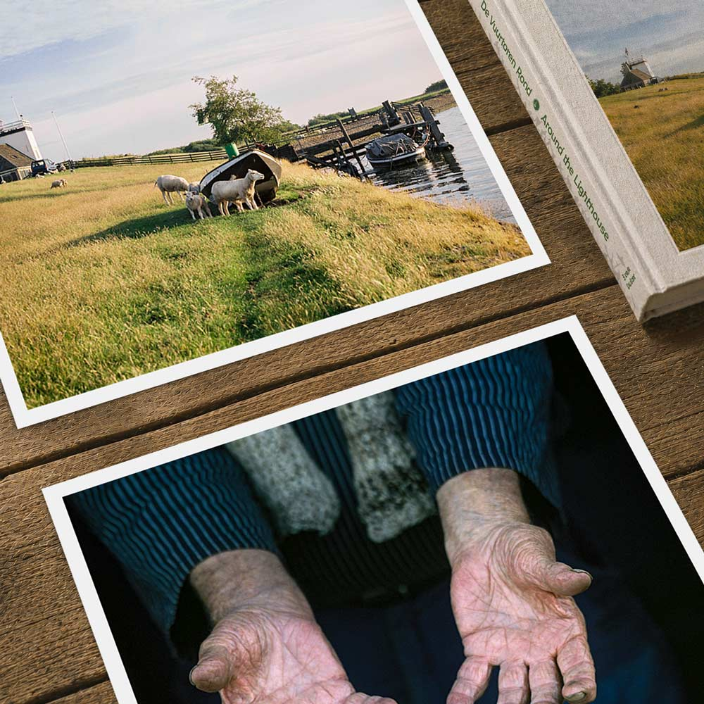
Een fotoboek over het leven rond de vuurtoren van Workum — Aan de rand van het IJsselmeer, waar land, wind en water elkaar voortdurend raken, leven Cornelie en Reid († 2020) al decennia in het ritme van deze plek. Hun wereld beweegt mee met de seizoenen: met dieren en tuin, oogst, stilte, storm. Een bestaan dat zeldzaam is geworden: eenvoudig, zelfvoorzienend en diep verbonden met de natuur.
Vier seizoenen lang keerden fotograaf Loek Buter en Jasper Hauser, Reid’s kleinzoon, terug naar de vuurtoren. Loek (tweevoudig Zilveren Camera-winnaar) fotografeerde met zijn middenformaatcamera, langzaam en aandachtig. In zijn eerste fotoboek komen die beelden samen met persoonlijke teksten van Loek en Jasper, over herinnering, perspectief en de vraag wat een plek door de jaren heen in zich bewaart.
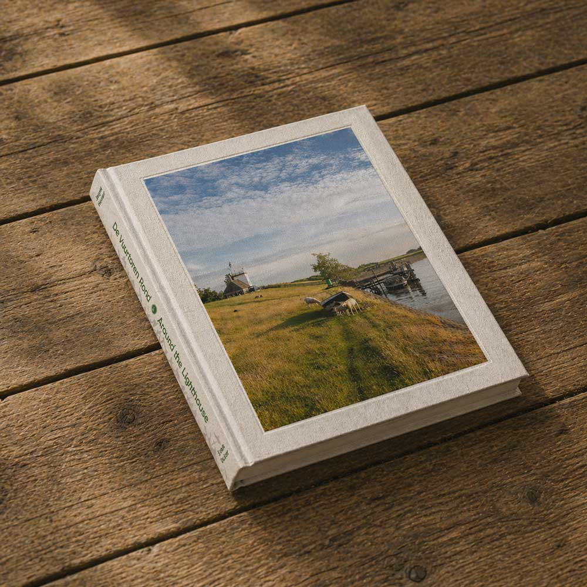
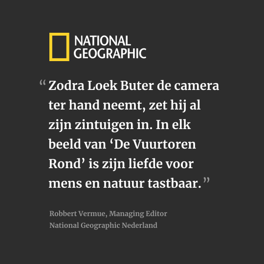
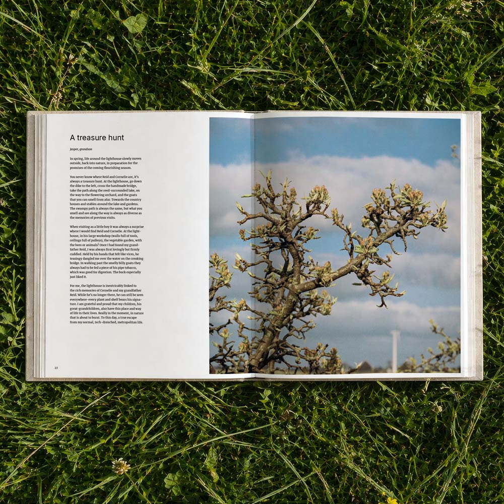
Specificaties
- Gebonden hardcover
- Canvas met foto inleg
- 172 pagina’s, 150 gram
- 20,7 × 25,7 cm, 900 gram
- Gedrukt door Printer Trento
- Nederlands en Engels
- ISBN 9789465264868
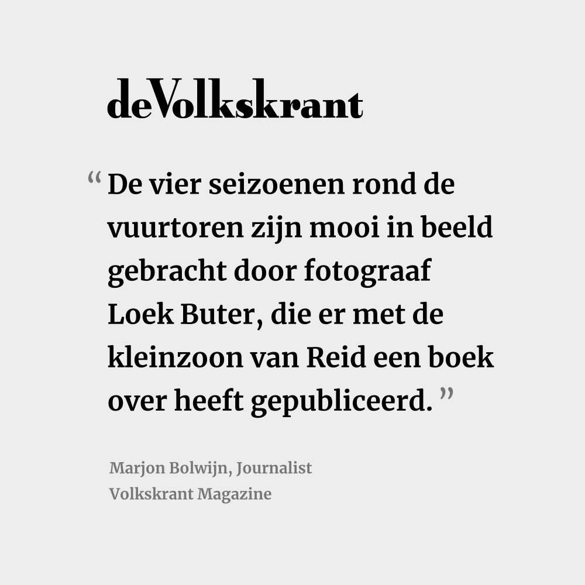
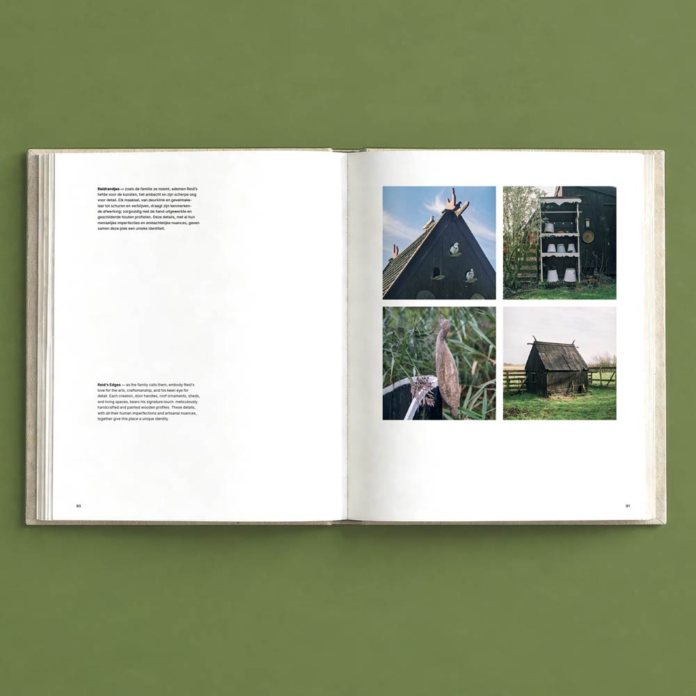
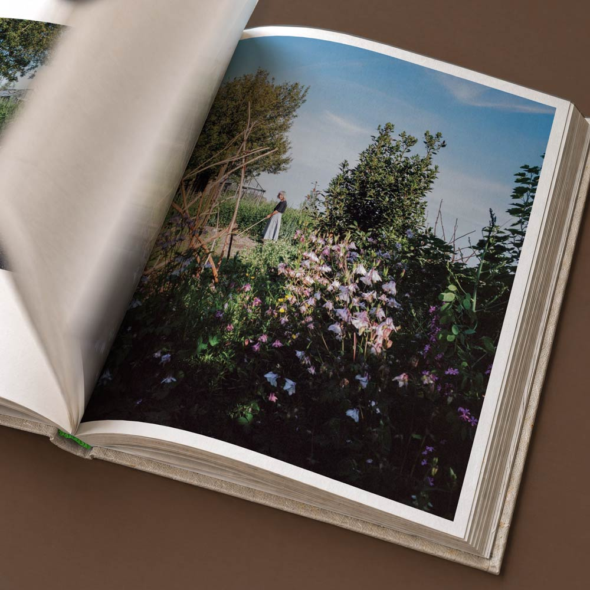
Publicaties & Media
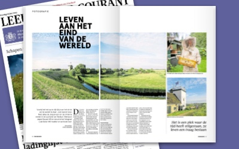
Leeuwarder Courant
Leven aan het eind van de wereld - 06/2026
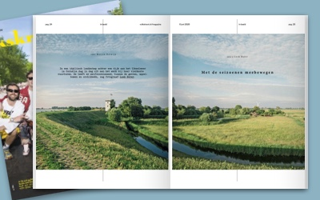
volkskrant.nl - Volkskrant Magazine
Met de seizoenen meebewegen - 06/2026
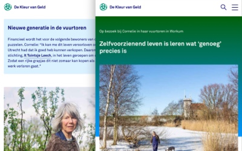
dekleurvangeld.nl — Triodos
Zelfvoorzienend leven - 12/2022
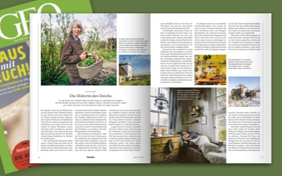
GEO Magazine - Germany
Die Hüterin des Deichs - 09/2022
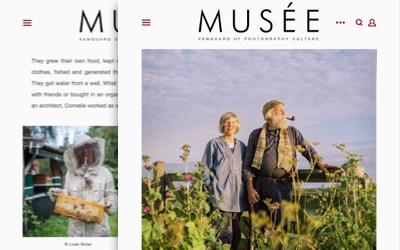
museemagazine.com
Photo Journal Monday - 06/2022
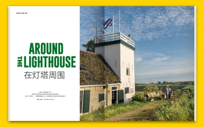
National Geographic Traveler China
Around the Lighthouse - 06/2022
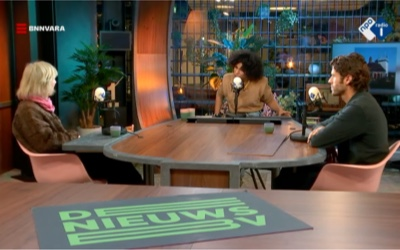
De Nieuws BV
Zelfvoorzienend leven - 12/2021
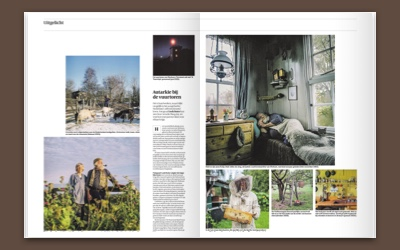
volkskrant.nl - Volkskrant Magazine
Rond de Vuurtoren - 11/2021
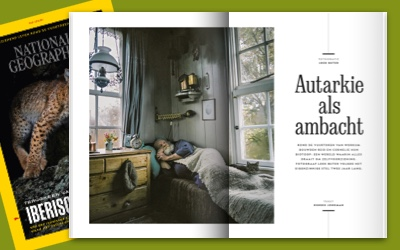
National Geographic Magazine Nederland
Autarkie als ambacht - 06/2021
Over de makers
Loek Buter — is documentair fotograaf voor National Geographic Magazine, de Volkskrant, Trouw, Stern en GEO Magazine. In zijn fotografie ligt de focus op de relatie tussen de mens, natuur en het Hollands landschap. Zijn fotoseries vielen meermaals in de prijzen bij de Zilveren Camera en werden tentoongesteld in de Kunsthal Rotterdam en het Fotomuseum Den Haag. Hij studeerde aan de Fotoacademie in Amsterdam. Met zijn vrouw en drie dochters woont hij op een kleine boerderij in Noord-Holland.
Jasper Hauser — is de kleinzoon van † Reid de Jong en is technologieondernemer en oprichter van onder andere de met een Apple Design Award bekroonde fotobewerkingsapp Darkroom. Hij is gespecialiseerd in digitaal productdesign en strategie. Hij studeerde fotografie aan de Fotoacademie in Amsterdam en grafische vormgeving aan de Hogeschool voor de Kunsten Utrecht.
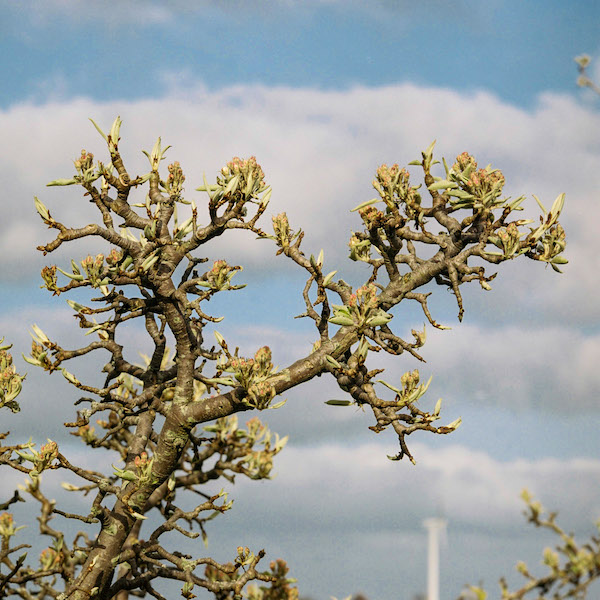
Veelgestelde vragen
Alles over bestellen, betalen, verzending en de twee edities — in het kort.
Wanneer wordt mijn bestelling verzonden?
Het boek is nu te koop. We verzenden lopend, meestal binnen enkele werkdagen. Zodra je pakket onderweg is, ontvang je een e-mail met tracking indien beschikbaar.
Tot wanneer geldt de introductieprijs?
Het boek kost nu €55. Zodra de introductieperiode eindigt, stijgt de prijs naar €65, zolang de oplage van 750 exemplaren strekt.
Met welke betaalmethoden kan ik betalen?
Je koopt het boek online via onze beveiligde webshop (Shopify). Bij het afrekenen kun je betalen met de betaalmethoden die Shopify daar aanbiedt — afhankelijk van je land en apparaat onder andere iDeal, creditcard en betaalpas (Visa, Mastercard, American Express, Maestro), PayPal, Apple Pay, Google Pay, Shop Pay, Bancontact, en andere lokale methoden. Welke opties je precies ziet, staat op het afrekenscherm.
Aan wie betaal ik?
Je betaalt aan Schnauzer B.V., het bedrijf van Jasper Hauser, mede-initiatiefnemer van De Vuurtoren Rond. De webshop en orderafhandeling lopen via dit bedrijf. Op je bankafschrift of iDeal-scherm kan die bedrijfsnaam staan in plaats van “De Vuurtoren Rond” — dat is normaal. Vragen over je bestelling? Mail naar info@devuurtorenrond.nl.
Is de oplage echt beperkt?
Ja. De standaardeditie telt 750 exemplaren, de speciale editie 25. Er is geen herdruk gepland — als de oplage op is, is het boek uitverkocht.
Wat is het verschil tussen de standaard- en speciale editie?
De standaardeditie (nu €55, oplage 750) is een canvas hardcover met blind embossing van 172 pagina’s. De speciale editie (€125, oplage 25) bevat hetzelfde boek, genummerd en gesigneerd door Loek en Jasper, plus twee gesigneerde prints van 30 × 30 cm.
Is het standaard exemplaar gesigneerd?
Nee. Alleen de speciale editie (oplage 25) is genummerd en gesigneerd door Loek en Jasper. Het standaard exemplaar is niet gesigneerd.
Is het boek tweetalig?
Ja. Het boek is tweetalig: teksten en typografie zijn in het Nederlands én Engels opgenomen.
Verzend je ook naar het buitenland?
Ja. Verzending binnen Nederland is inbegrepen in de prijs. Voor bestellingen naar andere landen worden de verzendkosten berekend bij het afrekenen in de webshop.
Zijn de foto’s in het boek dezelfde als op de website?
Gedeeltelijk. Het boek bouwt voort op de online seizoensreeks, maar is een zelfstandig werk: andere selectie, extra beelden, grotere reproducties en nieuwe teksten — bedoeld voor op de plank, niet als papieren kopie van de site.
Is er ook een digitale versie?
Nee — dit fotoboek is alleen verkrijgbaar als hardcover. De seizoensverhalen op deze website blijven gratis online te lezen; het boek is een aparte, uitgebreide editie op papier.
Kan ik het boek in een winkel kopen?
Ja, direct via onze webshop op deze pagina. In fysieke winkels is het boek nog niet overal verkrijgbaar. We werken aan verkoop via boekhandels, waaronder bol.com en Amazon.nl. Schrijf je in voor de nieuwsbrief — we laten het weten zodra het boek breder verkrijgbaar is.
Ik ben boekhandelaar — kan ik het boek verkopen?
Graag. Neem contact op via info@devuurtorenrond.nl — we sturen je graag informatie over wholesale en verkoop in de winkel.
Wat als mijn boek beschadigd aankomt?
Elk exemplaar versturen we in plastic tegen waterschade, in een stevige doos die ook tegen stoten beschermt — we doen er alles aan om schade onderweg te voorkomen. Komt je boek toch beschadigd aan, mail dan naar info@devuurtorenrond.nl met foto’s. We sturen zo snel mogelijk een vervangend exemplaar.
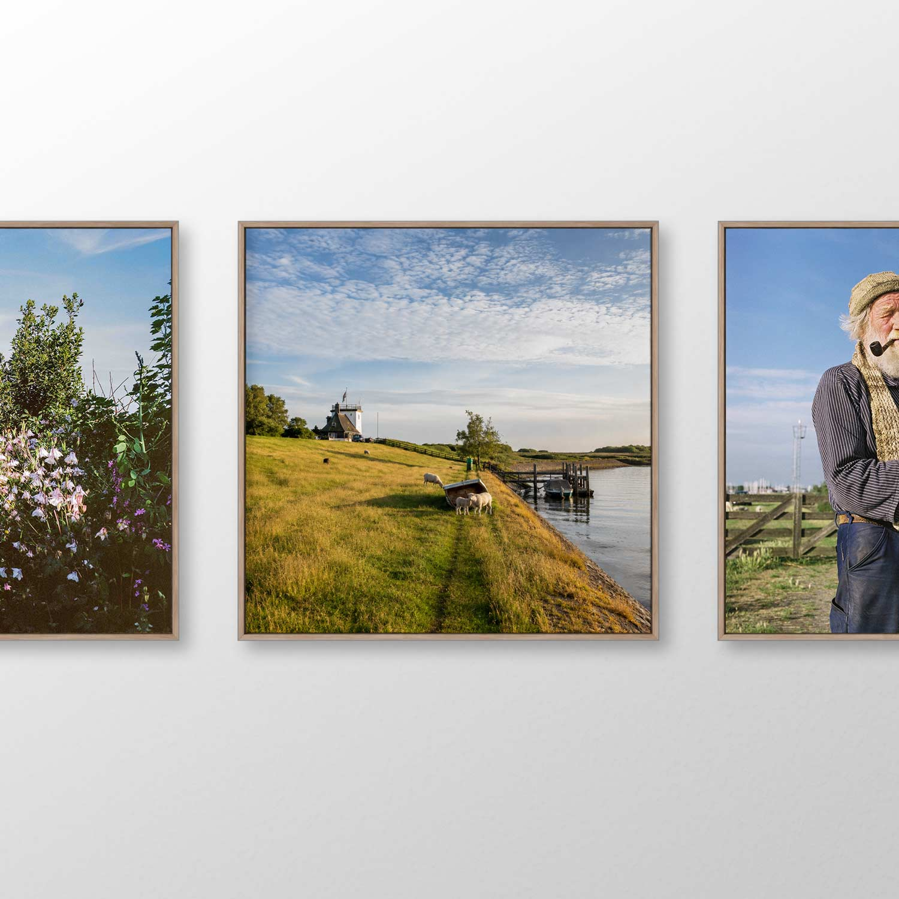
Fine art prints
Wil je een beeld uit De Vuurtoren Rond aan de muur? Loek Buter biedt geselecteerde foto’s uit het boek als museum kwaliteit fine art print, gedrukt en afgewerkt zoals je van zijn zou verwachten.
Bestel via loekbuter.com. Naast prints kun je bij Loek ook terecht voor een foto opdrachten, een fotocursus, werkgroep fotografie of een persoonlijk coachingsgesprek.
Bestel prints